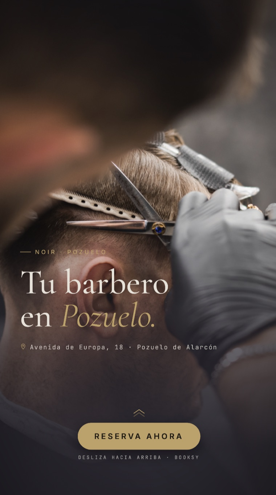

932
Clics en enlace
Los resultados de junio y el plan de trabajo para julio, agosto y septiembre. Barberías de Chueca y Pozuelo.
Primer mes con publicidad: 100 € de inversión, contenido en Historias y publicaciones, y anuncios en Instagram para Chueca y Pozuelo. Estos son los números del 30 de mayo al 28 de junio.
La inversión en anuncios multiplicó el alcance de la marca y disparó la actividad sobre el perfil. El contenido de pago concentró casi todas las reproducciones y trajo audiencia nueva, sobre todo de Madrid centro y Pozuelo.
El 83,6% de todas las reproducciones vino de contenido promocionado.
El 92,5% de las cuentas alcanzadas todavía no nos seguía: público fresco y local.
932 clics al enlace y 110 toques al botón externo, más de 5 veces por encima del mes anterior.
Resultado total de las campañas de pago en los últimos 30 días.

La inversión en publicidad fue el motor del alcance del mes. El contenido orgánico aportó el 16,4% restante, manteniendo la presencia entre los seguidores actuales.
Reproducciones y cuentas alcanzadas en los últimos 14 días, y el peso de cada formato de contenido.
Audiencia mayoritariamente nueva: captación pura.
Lectura. Los carruseles y las Historias tienen mucha capacidad de generar alcance, como hemos visto en junio: juntos concentran más del 84% del consumo. Los Reels darán un empujón extra después del verano, pero de momento no hacen falta para captar interesados nuevos.
Evolución de seguidores, contenido que mejor capta y de dónde viene la audiencia.
Núcleo claro en Madrid capital y tracción en el eje Pozuelo–Boadilla, justo donde está la segunda barbería.
Un mes de captación fuerte: la marca llegó a miles de cuentas nuevas y convirtió ese alcance en visitas e intención de reserva.
El mensaje de marca, no la oferta. Los anuncios con el tono Noir —“barbería de autor”, “no es una peluquería”— fueron los que más captaron.
Segmentación local acertada. Madrid centro y el eje Pozuelo–Boadilla, exactamente las zonas de las dos barberías.
Del alcance a la acción. 932 clics y 110 toques al enlace: el público no solo miró, dio el paso.
La analítica de julio estará disponible a principios de agosto, con la comparativa frente a junio. Mientras tanto, en Planificación tienes el plan de trabajo del verano.
Junio nos dejó una base clara. El verano va de sostener ese ritmo, escalar la inversión poco a poco y llegar a septiembre —la vuelta a la rutina— con una buena campaña de nueva temporada y con el rodaje del contenido del siguiente trimestre. Aquí está el mes a mes.
Halloween, Black Friday y Navidad con material propio.
El plan de julio es consolidar lo que funcionó en junio antes de dar pasos más grandes. Estas son las cuatro líneas de trabajo del mes.
Mantener o subir un poco desde los 100 € de junio. Como los impactos crecen de forma proporcional al presupuesto, preferimos ir escalando mes a mes en lugar de dar un salto grande de golpe.
Historias y publicaciones en el mismo mix que en junio concentró el 84% del consumo, para acompañar al alcance de los anuncios.
Dar más peso a las piezas que lideraron —como “barbería de autor”— y retirar las que menos rinden.
Lanzar formatos y textos nuevos para ir encontrando las próximas piezas ganadoras de cara al otoño.
En agosto hay menos gente en Madrid y menos actividad. Lo aprovechamos para preparar septiembre en dos frentes: desarrollamos el contenido que grabaremos —temas y guiones— y dejamos lista la campaña de vuelta a la rutina. La publicidad y el perfil, en mantenimiento.
Dejar montada la campaña de vuelta a la rutina que lanzamos en septiembre: mensajes, creatividades y calendario, listos para arrancar con fuerza.
Decidir qué queremos contar en el rodaje: temas, ideas y guion de cada pieza, con el tono Noir, para llegar a septiembre con todo definido.
Cerrar localizaciones en Chueca y Pozuelo, el listado de tomas y fotos, y el calendario del día de grabación.
Sostener la inversión y publicar con regularidad durante el mes de vacaciones, sin perder el alcance ganado.
Septiembre es un mes fuerte: la gente vuelve a Madrid y a la rutina. Lanzamos la campaña de vuelta a la rutina que preparamos en agosto y, en paralelo, grabamos el contenido que alimentará el siguiente trimestre.
El foco del mes: lanzar una campaña potente aprovechando el regreso a la ciudad, con el mensaje y las piezas que dejamos listos en agosto.
Aprovechar que la gente vuelve para escalar los anuncios y captar la demanda de vuelta a la barbería.
En paralelo, rodamos vídeo y fotos en las dos barberías: el material propio que usaremos en el trimestre siguiente.
Ese contenido es la base de octubre a diciembre: Halloween, Black Friday y Navidad, las fechas más fuertes del año a nivel de comercios.
Guion, localizaciones en Chueca y Pozuelo y listado de tomas y fotos antes de rodar.
Jornada de grabación: vídeo y fotografía con el tono Noir.
Edición, color y versiones adaptadas a cada formato: Reels, Historias, web y anuncios.
Un banco de piezas listo para publicar y para alimentar la campaña del último trimestre.
El trabajo que sostiene los resultados. Así gestionamos la publicidad, el contenido y el seguimiento cada mes, para que sepáis en todo momento qué se está haciendo y por qué.
Segmentación por zona (Chueca y el eje Pozuelo–Boadilla), públicos y retargeting. Revisamos el rendimiento durante el mes y movemos el presupuesto hacia lo que mejor funciona.
Test A/B de mensaje y formato. Escalamos las piezas que ganan y pausamos las que no rinden, para no gastar de más en lo que no convierte.
Mezcla de Historias y publicaciones planificada, con edición y textos en el tono Noir. Nada improvisado: cada pieza tiene su sitio.
Seguimos alcance, coste por resultado, clics, visitas al perfil y seguidores. Miramos lo que mueve reservas, no las cifras de vanidad.
Un informe como este al cierre de cada mes, con los números y su lectura, y una llamada breve para revisarlo juntos.
Acceso a los resultados y decisiones explicadas con claridad. Sabéis en qué se invierte y qué esperamos de cada acción.
Cada mes recibís estos KPIs con su lectura. No son cifras sueltas: cada una responde a una pregunta concreta sobre cómo va la marca.
A cuántas personas distintas llega el contenido.
Lo que cuesta cada acción que buscamos.
Cuánta gente da el paso hacia la reserva.
% que hace clic tras ver el anuncio.
Cuántas veces ve cada persona la campaña.
Interés directo en Noir tras el impacto.
Crecimiento del público propio mes a mes.
Coste por cada mil impresiones: mide lo rentable del alcance.
Chueca y Pozuelo no comparten el mismo cliente, y por eso no pueden compartir la misma estrategia. Este estudio analiza cada zona —tamaño, población, poder adquisitivo y tipo de cliente— y termina con una estrategia de venta pensada para cada barbería.
La diferencia que detectó el equipo, en una cifra. En Pozuelo el cliente vuelve; en Chueca, casi todo es primera visita.
Lo que decide la estrategia no es cuánta gente entra, sino cuánto vale cada cliente a lo largo del tiempo. Y ahí Pozuelo y Chueca juegan a cosas opuestas.
Ganar un cliente nuevo importa menos que no perder a los que ya vuelven. Cada habitual es un activo de largo plazo.
La captación es casi gratis por el paso, pero un cliente que no vuelve deja poco margen. La palanca es la recurrencia, no más tráfico.
Misma marca y misma calidad, pero la economía de cada local es distinta. Por eso cada barbería necesita su propia estrategia de venta.
Municipio residencial y familiar al oeste de Madrid. Lidera España en renta desde hace años: mucho poder adquisitivo, poca rotación de población y un cliente que hace vida en la zona.
Lectura. Pozuelo es un negocio de fidelidad. Hay menos gente y menos competencia, pero cada cliente es de alto poder adquisitivo y vuelve una y otra vez. Aquí no se gana captando sin parar, sino cuidando y exprimiendo la relación con el que ya viene.
Pleno centro, en el barrio más cosmopolita de la capital: zona LGTBIQ+ de referencia, ocio, turismo y muchísimo tránsito de gente. Población joven, competencia altísima y decisiones que se toman en la calle, al momento.
Lectura. Chueca es un negocio de volumen. Entra muchísima gente, pero casi nadie vuelve: es una zona de paso con decenas de barberías compitiendo en pocas calles. El problema no es que no entren clientes —entran—, es que no se quedan. La partida se juega en captar bien y convertir el paso en recurrencia.
Dos factores que condicionan el plan: cuándo hay demanda y contra quién competimos en cada zona.
El negocio no es plano todo el año. Primavera y principio de verano tiran fuerte; agosto baja con Madrid medio vacío; septiembre repunta con la vuelta a la rutina. Por eso el plan de medios prepara en agosto y empuja en septiembre.
En Chueca competimos contra decenas de barberías en pocas calles: la decisión se toma en segundos y gana la visibilidad. En Pozuelo la densidad es baja y el cliente es cautivo: el rival no es otra barbería, es que el cliente se salte el corte.
Tesis: aquí no se gana captando, se gana reteniendo. Con una base fiel y de altísimo poder adquisitivo, cada punto de frecuencia, ticket y recomendación multiplica el valor por cliente. El plan ataca las palancas por orden de impacto.
Antes de que el cliente pague, se agenda la siguiente. Es la palanca de retención número uno en barbería y no cuesta nada.
Cuota mensual o bono de cortes para el habitual: asegura caja, sube la frecuencia y ata al cliente frente a cualquier competencia. En una zona de alto poder, encaja solo.
Educar en mantenimiento —barba, perfilado de cuello, retoques entre cortes— para acortar el ciclo de visita. Subir la frecuencia media es crecer sin captar a nadie.
Rituales, tratamientos, arreglo de barba y venta de producto de calidad. El cliente de Pozuelo paga por calidad; el error sería no ofrecérsela.
Trae-a-un-amigo estructurado, packs padre+hijo y paquetes para las oficinas de Av. de Europa. En una comunidad cerrada y de confianza, la recomendación convierte más que cualquier anuncio.
Pedir reseña al agendar la próxima cita (base fiel = reseñas fáciles) y CRM con cumpleaños y trato personalizado, para ser la barbería de referencia de Pozuelo.
Tesis: la zona te regala el tráfico; el dinero está en tapar la fuga. Entra muchísima gente y casi nadie vuelve. Dos motores: ganar la batalla por ser elegido en la calle y convertir la primera visita en una segunda. Con pasar 1 de cada 5 de paso a recurrente, cambia la cuenta.
En una zona de tanto paso, la captación se juega en la acera. Repartir flyers y folletos, promotores en la puerta y en los puntos de más tránsito, y un escaparate que pare a la gente. Al que pasa hay que ponerle algo en la mano y un motivo para entrar hoy.
Capturar el contacto en la primera visita y disparar una oferta potente para la segunda en 3–4 semanas. Los 370 clientes de “primera visita” son oro sin explotar.
Ficha de Google impecable, fotos y, sobre todo, velocidad de reseñas. Quien busca “barbería Chueca” elige por reputación en segundos, antes de mirar a la de al lado.
QR en la silla y petición de reseña a cada cliente nuevo. En zona de paso, la reseña es el mayor argumento de confianza para quien no te conoce.
El caso Roberto lo demuestra: la gente sigue a la persona. Potenciar el perfil y el porfolio de cada barbero es la captación más barata que existe.
El turista no vuelve nunca. Anuncios y contenido dirigidos a quien vive y trabaja en el Centro —18.045 residentes más oficinas—: el perfil de paso que sí repite.